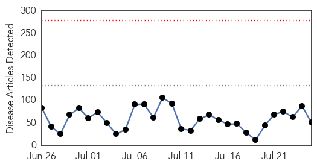
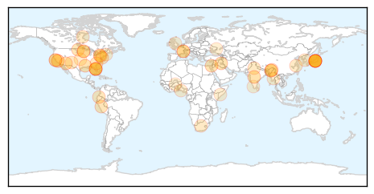
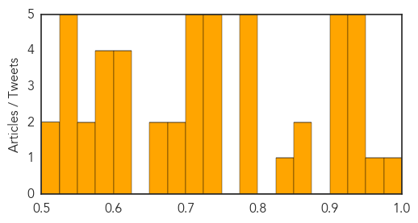

Unknown
30-Day Web Trend
0 alerts, 0 warnings

30-Day Twitter Trend
0 alerts, 0 warnings

Article Locations
Article Confidences
Top Articles:
- 0.980
- Reports of Lyme disease mixed across region: News
- 0.969
- Florida’s Emerging Leprosy Problem: blame on Spitting Armadillos
- 0.949
- Health Minister holds review meeting on JE outbreak in Assam Ministry
- 0.936
- Salmonella Week - Pork, Eggs, Sushi and Chicken
- 0.936
- Encephalitis sting inflames Aasu
- 0.933
- J P Nadda holds review meeting on JE outbreak in Assam
- 0.930
- One dead, 9 affected with Japanese Encephalitis in Arunachal
- 0.921
- Brain-eating parasite found in Louisiana water
- 0.917
- Chicago Tribune
- 0.917
- Chicago Tribune
- 0.917
- Chicago Tribune
- 0.917
- Chicago Tribune
- 0.863
- Nasty brain-eating amoeba found in Louisiana drinking water
- 0.863
- Uncommon disease spread from animals, insects found in four N.D. counties
- 0.833
- Treatment failure in parasite infection tied to virus
- 0.797
- Florida residents reportedly urged to keep away from armadillos
- 0.797
- Monterey health department confirms rabid cat died from bat rabies
- 0.792
- The Health Emergency in the Ecuadorian Amazon Region
- 0.787
- Vaccine-pushing clinic injects five children with the wrong vaccines, possibly causing permanent damage
- 0.778
- State health secretary promotes Lyme disease awareness
- 0.748
- SC Health Department Releases Final Update of E. Coli Outbreak Linked to Daycare
- 0.747
- UN health agency welcomes European regulators’ initial green light on malaria vaccine - World
- 0.734
- Test confirms Monterey cat died from bat rabies
- 0.733
- Monterey cat rabies infection transmitted by bat
- 0.729
- Health partners in Somalia concerned about scaling down of life-saving health services due to funding shortages
- 0.717
- Japanese encephalitis claims 66 lives in Assam
- 0.707
- Japanese encephalitis: Health ministry rushing expert team to Assam
- 0.706
- New Mexico’s first human plague case? Awaiting confirmation testing
- 0.704
- Japanese encephalitis: Health ministry rushing expert team to Assam
- 0.701
- Japanese encephalitis: Health ministry rushing expert team to Assam
- 0.681
- Two Salmonella Cases Confirmed by Mohawk Council of Akwesasne
- 0.676
- Health ministry rushing expert team to Assam Mangalorean.com
- 0.674
- Star Student Magazine
- 0.674
- Chinese firms encourage 100,000 tourists to visit S. Korea
- 0.624
- Chinese firms encourage 100,000 tourists to visit S. Korea
- 0.622
- UN stands ready to assist Myanmar with heavy flooding - Xinhua
- 0.607
- Huntington Park Elementary School
- 0.604
- Rotary International striving to save lives via clean water, sanitation
- 0.588
- Nigeria celebrates 1 year with no new polio cases
- 0.583
- First Malaria Vaccine One Step Closer to Saving Lives in Africa
- 0.579
- Legislation to study health impacts of wind turbines
- 0.576
- First ever Malaria Vaccine in the world will debut soon in Africa
- 0.572
- As health needs rise in Somalia, funding hits new low: UN
- 0.556
- Health problems second largest cause of suicides in India
- 0.536
- World first ever malaria vaccine gets backing
- 0.533
- E. Ukraine Faces Water Crisis
- 0.532
- First 'Malaria jab' gets approved
- 0.530
- Malaria vaccine gets 'green light'
- 0.525
- Still Drinking Tap Water? Read This
- 0.518
- World’s First Malaria Vaccine Takes Another Step Forward
Showing top 50 articles...
Top Tweets:
- 0.621
- Read more about a vaccine candidate that prevents spread of malaria by blocking its transmission to mosquitoes http://t.co/7bewmwKtQN
Hepatitis
30-Day Web Trend
1 alerts, 0 warnings

30-Day Twitter Trend
1 alerts, 0 warnings

Article Locations

Article Confidences

Top Articles:
- 0.761
- World Hepatitis Day: Prevent hepatitis. Act now
- 0.737
- Which Vaccination Exemptions Are Allowed by Georgia?
- 0.729
- Malaria vaccine gets regulatory nod « Nigerian Pilot Newspaper
- 0.715
- Finally! First malaria vaccine gets the nod after a 28-year journey
- 0.666
- Health Unit Offers Free Hepatitis Testing This Week
- 0.595
- Malaria vaccine gets regulatory nod
- 0.533
- Malaria vaccine gets regulatory nod
- 0.527
- Call for awareness on Hepatitis B
- 0.519
- Hepatitis spread causes concern in lead up to health week
Top Tweets:
-
No tweets found for Jul 25, 2015